실사풍 코미디 숏폼 시리즈 · 2026
코미디 숏폼
실사풍 코미디 숏폼과 제작 스킬
생성한 컷의 결함은 종류에 따라 부분 수정으로 고치거나 다시 생성하고, 1차 편집은 직접 만든 숏폼 제작 스킬로 에이전트에게 맡긴 뒤 CapCut에서 마무리합니다.
EP001–011
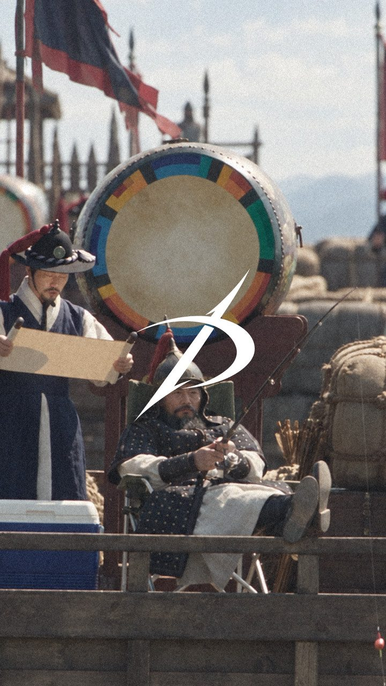
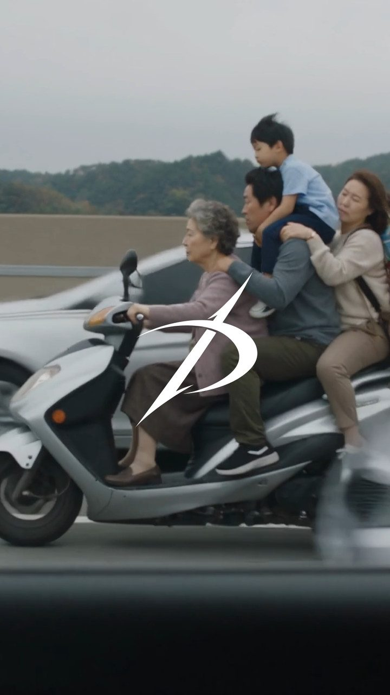
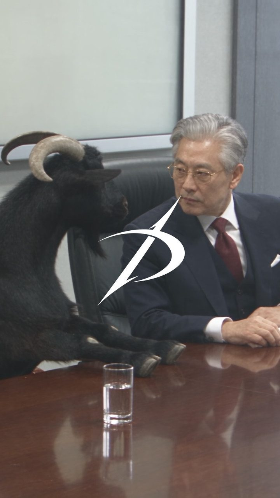
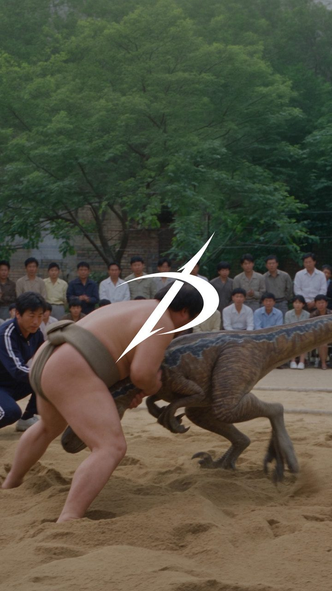
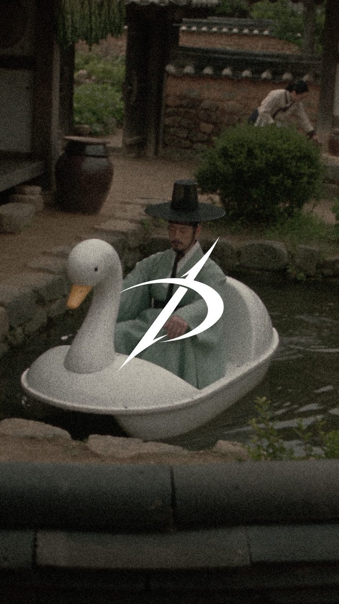
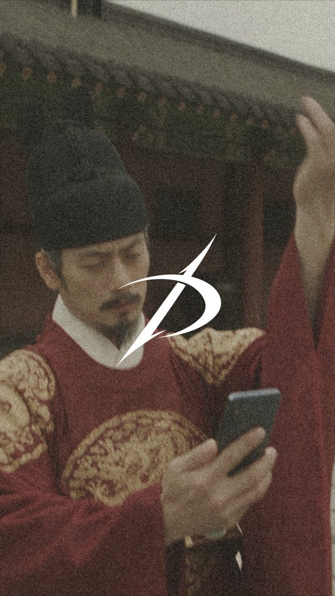
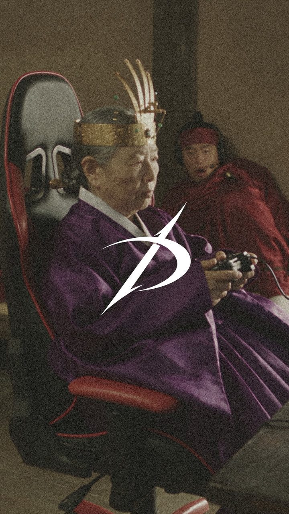
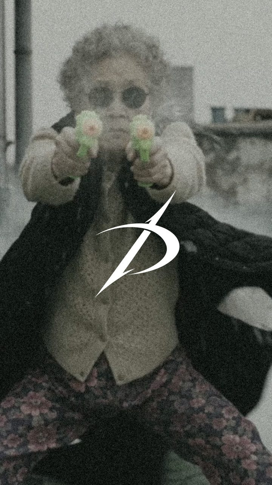
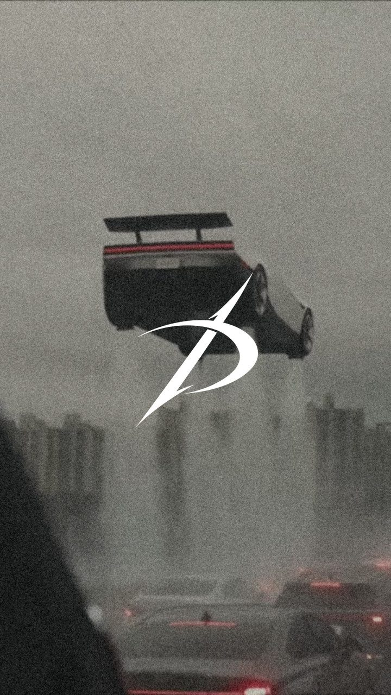
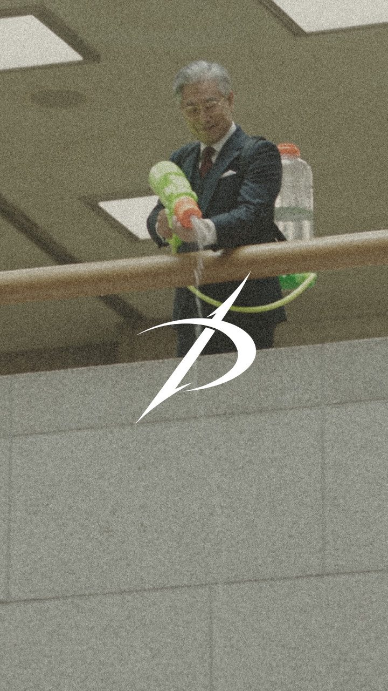
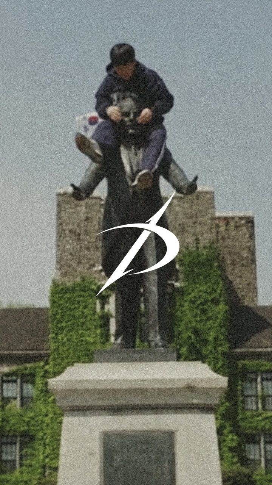
영화 속 동작을 다른 인물로 옮겼습니다
「매트릭스 할머니」는 영화 장면의 동작을 그대로 따 와 할머니가 하게 만든 편입니다. 동작을 옮기는 기능(모션 전이)에 원본 동작 영상을 넣고, 인물은 새로 제작했습니다.
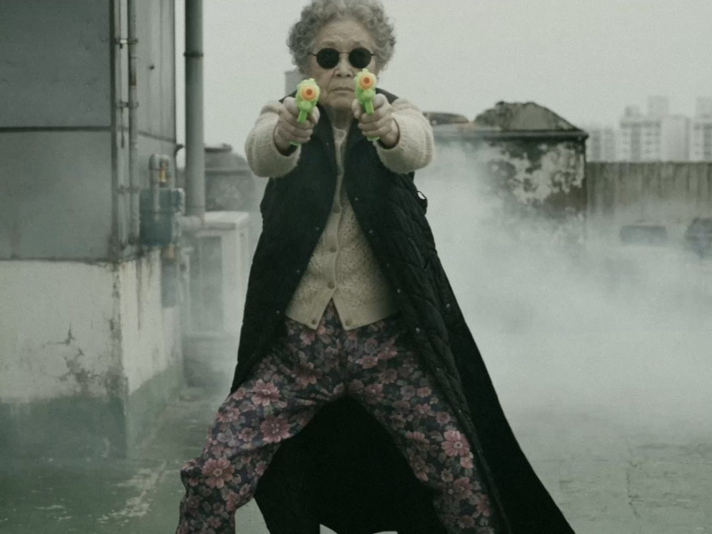
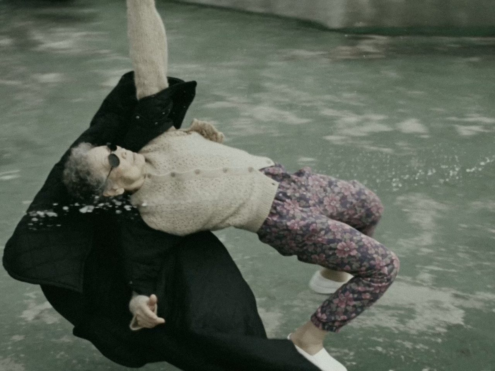
컷을 음악의 타격음에 맞추는 1차 편집 도구
이 숏폼을 위해 직접 만든 제작 스킬입니다. 1차 편집에서 에이전트가 음악을 분석해 컷을 드럼이 치는 순간에 맞춘 CapCut 프로젝트를 만들고, 저는 그걸 열어 마무리합니다.
컷 위치를 정하는 코드 발췌
def snap(c, k): t = k * c.UNIT + c.SWING.get(k % c.PER_BAR, 0.0) if len(c.ONSETS): i = np.argmin(abs(c.ONSETS - (c.MUSIC_START + t))) if abs(c.ONSETS[i] - (c.MUSIC_START + t)) <= SNAP_TOL: t = c.ONSETS[i] - c.MUSIC_START return round(t / FR) * FR박자 위치를 잡고, 가까이에 타격음이 있으면 컷을 그 순간으로 옮깁니다.
- 스킬
- 직접 만든 제작 스킬 · Claude Code와 Codex에서 같이 씁니다
- 방식
- CapCut 프로젝트 파일을 코드로 직접 만듭니다
- 분담
- 에이전트가 1차 편집 → 제가 CapCut에서 마무리
부분 수정으로 고칠지, 다시 생성할지는 결함 종류로 정합니다
| 결함 | 판단 |
|---|---|
| 있던 것이 사라지거나 없어야 할 것이 남음 | 부분 수정으로 고칩니다 |
| 물체 크기·닿는 위치·구도가 틀림 | 다시 생성합니다 — 부분 수정을 세 번 해도 고쳐지지 않았습니다 |
| 수정본의 화면비가 바뀌어 돌아옴 | 크기를 재고 자를 위치를 고릅니다 |
| 배경이 다른 나라로 나옴 | 다시 생성하고, 장소 문장 첫머리에 나라와 시대를 적습니다 |
| 모델이 동작을 순하게 바꿔 냄 | 묘사를 늘리지 않고 아예 다른 동작으로 바꿉니다 |
제작 기록에서 뽑은 판단 기준입니다.